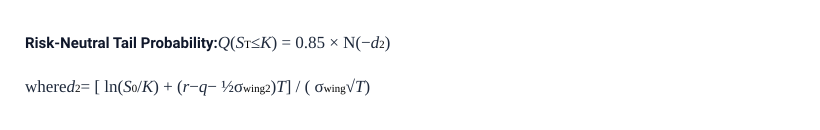
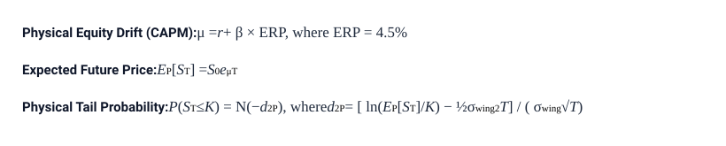

Tracks market-implied risk-neutral probability over a rolling 2-year horizon via liquid ATM LEAPS volatility and downside skew modeling.
| Ticker | Spot Price | 50% Strike (K) | Target (2Y Hence) | ATM IV | Wing IV | Risk-Neutral Q(S ≤ K) | Lognormal + CAPM Drift P(S ≤ K) |
|---|---|---|---|---|---|---|---|
| {{ row.ticker }}{% if row.is_fallback %}*{% endif %} | ${{ "%.2f"|format(row.spot) }} | ${{ "%.2f"|format(row.target_strike) }} | {{ row.expiration }} | {{ "%.1f"|format(row.atm_iv * 100) }}% | {{ "%.1f"|format(row.wing_iv * 100) }}% | {{ "%.2f"|format(row.prob_Q * 100) }}% | {{ "%.2f"|format(row.prob_P * 100) }}% |
This tracker estimates the probability that a constituent equity or benchmark index closes 50% or more below its current spot price at the conclusion of a rolling 2-year forward window (T = 2.0 years, K = 0.50 × S0). Note that this evaluates an endpoint loss at t + 2.0 years; it does not measure path-dependent interim drawdowns where an asset drops 50% and subsequently rebounds. The evaluation window rolls forward continuously to ensure uniform comparability across historical periods.
The dashboard tracks prominent mega-cap enterprise and consumer technology equities (NVDA, GOOG, MSFT, AAPL, AMZN, META, TSLA) and special purpose vehicles (SPCX), alongside the three principal US equity benchmarks through their primary exchange-traded funds (ETFs):
Because these ETFs maintain near 1:1 price tracking with their underlying indices, option-implied tail calculations on the ETFs reflect systemic broad-market crash probabilities.
The risk-free interest rate (r) is mapped dynamically to the active market yield of the 2-Year US Treasury note (Yahoo ticker: 2YY=F). Aligning the discount rate with the contract duration captures macroeconomic shifts, from the 0.15% rate environment of early 2021 to the higher yield regime of 2023–2026. For dates prior to the launch of 2YY=F futures in mid-August 2021, the historical rate matches the contemporaneous Federal Reserve 2-Year Constant Maturity Treasury yield. Forward prices incorporate this rate alongside an annualized dividend yield approximation (q = 0.5%).
Because public historical financial APIs do not store end-of-day option chains, the dataset combines two distinct analytical regimes:
Deep out-of-the-money puts trade at an implied volatility premium over ATM options (the volatility smile/skew). Rather than attempting to fit noisy or illiquid deep-OTM put contracts directly, the model scales the liquid ATM baseline by an empirical downside skew factor of 1.18 to determine the wing volatility (σwing) for the 50% drawdown strike.
The risk-neutral probability Q reflects the market price of downside catastrophe insurance embedded in option contracts. Evaluated via the Black-Scholes lognormal tail cumulative distribution function N(−d2), Q incorporates investors' risk aversion and appetite for portfolio insurance without assuming expected positive stock price appreciation. Probabilities are reported directly without artificial floors.

The physical column P represents an analytical scenario combining the lognormal tail framework with positive expected equity drift (μ) derived from the Capital Asset Pricing Model (μ = r + β × ERP − q, with an Equity Risk Premium of 4.5%). Because equities have expected positive drift over a 2-year holding period, this drift provides a statistical buffer that places P substantially below the market-implied hedging probability Q across all assets.
